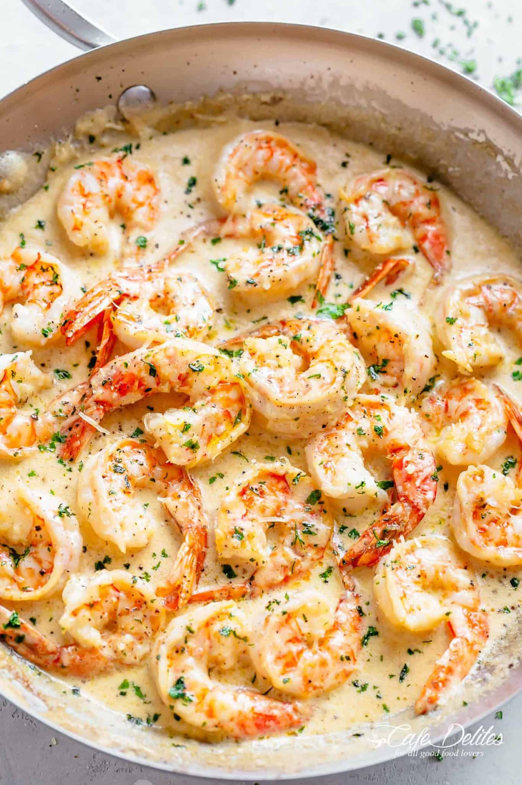

Creamy Garlic Shrimp With Parmesan

Description
Everyone goes crazy for this simple yet incredible Creamy Garlic Shrimp.
Transform ingredients you most likely already have in your refrigerator
into an incredible dinner and serve it with low carb OR carb loaded sides
for an amazing meal! All tips and suggestions included.
Ingredients
- 1 tablespoon olive oil
- 1 pound (500 grams) shrimp, tails on or off
- Salt and pepper, to taste
- 2 tablespoons unsalted butter
- 6 cloves garlic minced
- 1/2 cup dry white wine* or chicken broth
- 1 1/2 cups reduced fat cream**
- 1/2 cup fresh grated Parmesan cheese
- 2 tablespoons fresh chopped parsley
Creamy Shrimp Step-By-Step
- Heat oil a large skillet over medium-high heat. Season shrimp with salt and pepper
and fry for 1-2 minutes on each side, until just cooked through and pink. Transfer
to a bowl; set aside.
-
Melt the butter in the same skillet. Sauté garlic until fragrant (about 30 seconds).
Pour in the white wine or broth; allow to reduce to half while scraping any bits off
of the bottom of the pan.
- Reduce heat to low-medium heat, add the cream and bring to a gentle simmer, while stirring
occasionally. Season with salt and pepper to your taste.
-
Add the parmesan cheese and allow sauce to gently simmer for a further minute or so until
the cheese melts and sauce thickens.
- Add the shrimp back into the pan, sprinkle with parsley. Taste test sauce and adjust salt
and pepper, if needed.
- Serve over pasta, rice or steamed veg.
Return to Recipe List